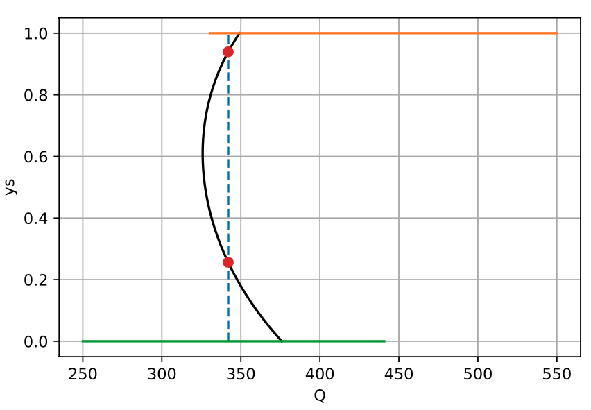
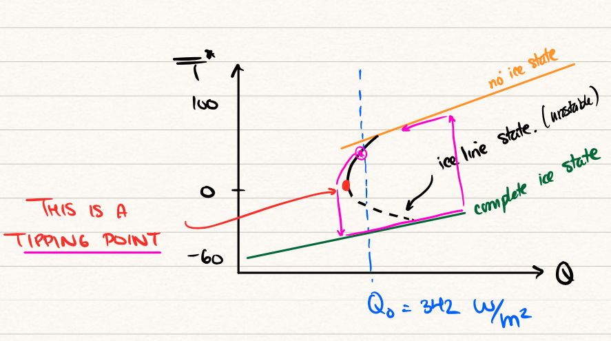

20 EBM with latitude IV
20.1 Studying the mean temperature
Following the previous chapter, we now have a better understanding of the relationship between the ice line, \(y_s\), and the solar forcing, \(Q\). We demonstrated that for the baseline case of \(Q = 342\), (at least) four solutions are possible.

Examination of the root shows that the two non-trivial ice lines are approximately at \(y_s = 0.256\) and \(y_s = 0.939\) for \(Q = 342\). Using the script developed in lectures, we can study a similar graph of the mean temperature versus the solar forcing. Jupyter hub link.
This yields the following picture:

During the lecture, we discussed the so-called Snowball Earth scenario where decreasing the solar constant may cause the stable state of the planet to jump down to the green branch shown above (completely frozen Earth). The solution exhibits hysteresis which describes the non-reversibility shown in the bifurcation diagram. This will be further expounded in the following discussion on stability.
20.2 Stability
So far, we have only discussed the steady-state solutions of the latitude-dependent EBM, repeated below: \[ C \frac{\mathrm{\partial}T}{\mathrm{\partial}t} = Qs(y)[1 - a(y)] - (A + BT) + k(\bar{T} - T). \] In this section, we investigate the stability analysis for the mean temperature, \(\bar{T}\). This was given in Equation 31.2 and repeated below: \[ C \frac{\mathrm{d}\bar{T}}{\mathrm{d}t} = G(\bar{T}) \equiv Q(1 - \bar{a}) - (A + B\bar{T}), \tag{20.1}\] The following linearisation argument was presented by Cahalan and North (1979), with some additional details to avoid confusion. Let us linearise this about a steady-state solution, writing \[ \bar{T} = \bar{T}^* + u(t), \] where \(u \ll 1\). By Taylor series, \[ G(\bar{T}) = G(\bar{T}^*) + G'(\bar{T}^*)u + O(u^2), \] so substitution into the ODE yields the linear equation \[ C \frac{\mathrm{d}u}{\mathrm{d}t} = G'(\bar{T}^*) u. \tag{20.2}\] We need to calculate the derivative term on the RHS. First, using the equation for \(G\) in Equation 20.1, we have \[ G'(T^*) = -B - Q \frac{\mathrm{d}\bar{a}}{\mathrm{d}\bar{T}}\biggr\rvert_{\bar{T} = \bar{T}^*}. \tag{20.3}\] The above calculation assumes that \(Q\) is a fixed number, as it should, since \(Q\) is regarded as a parameter (we choose a value of \(Q\), then this allows us to evolve the ODE).
The following presentation took about 3 lines of text in the presentation of Cahalan & North (1979), between eqns (1.2) and (1.3) in the image below. Students have inquired about the manipulations.

The problem is what to do with the derivative of \(\bar{a}\) that appears in (Equation 20.3). This is a strange quantity, since \(\bar{a}\) does not explicitly depend on \(\bar{T}\), and is given in (Equation 19.2). The issue is that there is a hidden dependence: \(\bar{a}\) depends on the ice line, \(y_s\), which depends on not only \(Q\), but is multivalued as well!
Cahalan & North, whether knowingly or unknowingly, applied a trick, which is to consider that \(Q\) is not a parameter, but that it can be viewed as depending on \(\bar{T}^*\), the steady state (this dependence is shown in Figure 20.2). Therefore, Cahalan & North returned to the equation (Equation 19.1) that gives the steady-state: \[ T^* = \frac{Q(1 - \bar{a}) - A}{B}. \] We differentiate this equation with respect to \(\bar{T^*}\), but now assume both \(Q\) and \(\bar{a}\) depend on \(\bar{T^*}\). This yields \[ 1 = \frac{1}{B} \frac{\mathrm{d}Q}{\mathrm{d}\bar{T^*}}(1 - \bar{a}) - \frac{Q}{B} \frac{\mathrm{d}\bar{a}}{\mathrm{d}\bar{T}^*} \Longrightarrow B = \frac{\mathrm{d}Q}{\mathrm{d}\bar{T^*}}(1 - \bar{a}) - Q \frac{\mathrm{d}\bar{a}}{\mathrm{d}\bar{T}^*} \tag{20.4}\]
We substitute the above value of \(B\) into (Equation 20.3), and then finally into the equation for the linearisation (Equation 20.2). Then we have \[ C \frac{\mathrm{d}u}{\mathrm{d}t} = -\left[(1 - \bar{a}) \frac{\mathrm{d}Q}{\mathrm{d}\bar{T}^*}\right]u(t) = -\gamma u(t), \] where the constant \(\gamma\) has been defined by the above. Thus, the solution is given by \[ u(t) = u(0) e^{-\gamma t/C}. \]
Note then that the crucial quantity is \[ \gamma \equiv (1 - \bar{a}) \frac{\mathrm{d}Q}{\mathrm{d}\bar{T}^*}. \] If \(\gamma\) is positive, the equilibrium point is stable, while if \(\gamma\) is negative, the equilibrium is unstable. Because \((1 - \bar{a}) > 0\), then this yields the so-called slope-stability theorem coined by Cahalan and North (1979): \[ \begin{align} \frac{\mathrm{d}Q}{\mathrm{d}\bar{T}^*} > 0 &\Longrightarrow \text{stable}, \\ \frac{\mathrm{d}Q}{\mathrm{d}\bar{T}^*} < 0 &\Longrightarrow \text{unstable}. \end{align} \]
We may now plot the bifurcation diagram, shown in \((Q, \bar{T})\)-space. First, return to Figure 20.2. In lecture 21, we drew the following picture:

Note the following characteristics.
There are up to four steady states (green, orange, two blacks).
Those branches with positive gradient are stable; there is only one branch with a negative gradient and it is thus unstable. In the image, these are shown solid for stable and dashed for unstable.
The diagram indicates tipping points and hysteresis. As explained in the lectures, one can encounter a situation where, beginning from the upper orange branches, the solar radiation is decreased past the tipping point. The solution must then evolve to the lowermost stable state (green). However, increasing \(Q\) does not return us to the original non-frozen state—unless \(Q\) is increased by a massive amount. This ‘hysteresis’ loop is shown with the maroon colours in the image above.